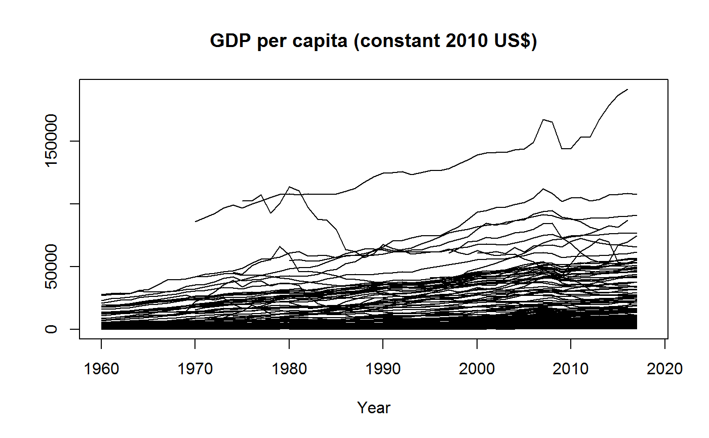
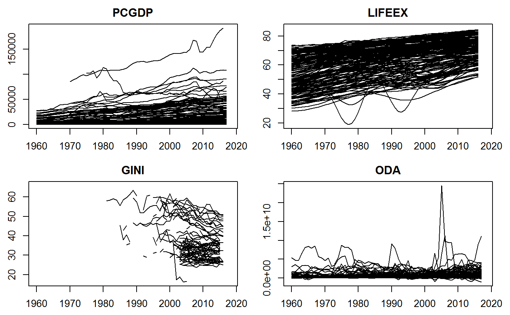
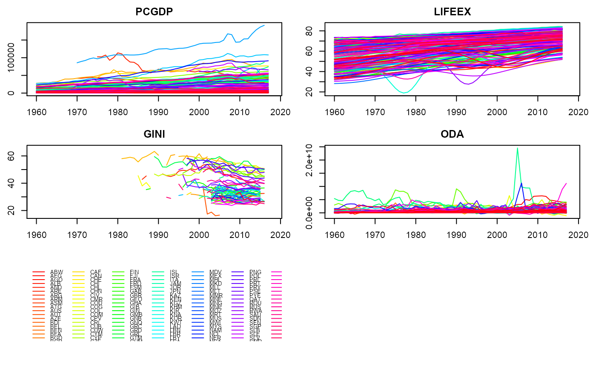
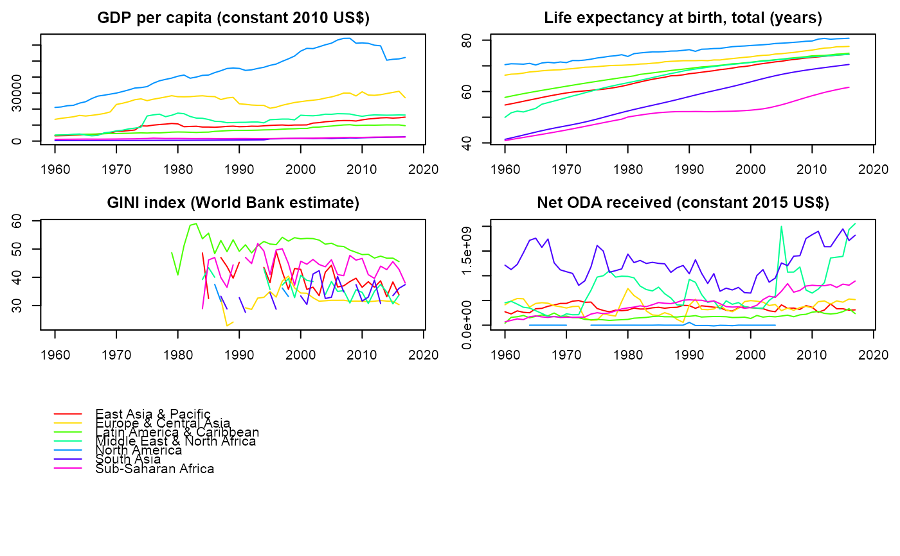
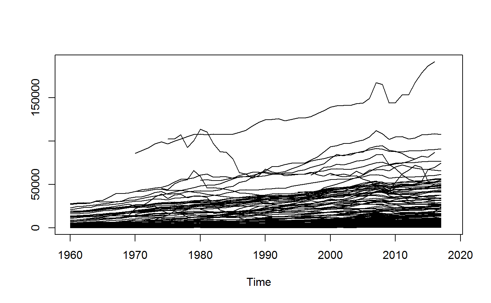

psmat.Rdpsmat efficiently expands a panel-vector or 'indexed_series' ('pseries') into a matrix. If a data frame or 'indexed_frame' ('pdata.frame') is passed, psmat returns a 3D array or a list of matrices.
psmat(x, ...)
# S3 method for default
psmat(x, g, t = NULL, transpose = FALSE, ...)
# S3 method for data.frame
psmat(x, by, t = NULL, cols = NULL, transpose = FALSE, array = TRUE, ...)
# Methods for indexed data / compatibility with plm:
# S3 method for pseries
psmat(x, transpose = FALSE, drop.index.levels = "none", ...)
# S3 method for pdata.frame
psmat(x, cols = NULL, transpose = FALSE, array = TRUE, drop.index.levels = "none", ...)
# S3 method for psmat
plot(x, legend = FALSE, colours = legend, labs = NULL, grid = FALSE, ...)a vector, indexed series 'indexed_series' ('pseries'), data frame or 'indexed_frame' ('pdata.frame').
a factor, GRP object, atomic vector (internally converted to factor) or a list of vectors / factors (internally converted to a GRP object) used to group x. If the panel is balanced an integer indicating the number of groups can also be supplied. See Examples.
data.frame method: Same input as g, but also allows one- or two-sided formulas using the variables in x, i.e. ~ idvar or var1 + var2 ~ idvar1 + idvar2.
same inputs as g/by, to indicate the time-variable(s) or second identifier(s). g and t together should fully identify the panel. If t = NULL, the data is assumed sorted and seq_col is used to generate rownames for the output matrix.
data.frame method: Select columns using a function, column names, indices or a logical vector. Note: cols is ignored if a two-sided formula is passed to by.
logical. TRUE generates the matrix such that g/by -> columns, t -> rows. Default is g/by -> rows, t -> columns.
data.frame / pdata.frame methods: logical. TRUE returns a 3D array (if just one column is selected a matrix is returned). FALSE returns a list of matrices.
character. Either "id", "time", "all" or "none". See indexing.
arguments to be passed to or from other methods, or for the plot method additional arguments passed to ts.plot.
logical. Automatically create a legend of panel-groups.
either TRUE to automatically colour by panel-groups using rainbow or a character vector of colours matching the number of panel-groups (series).
character. Provide a character-vector of variable labels / series titles when plotting an array.
logical. Calls grid to draw gridlines on the plot.
If n > 2 index variables are attached to an indexed series or frame, the first n-1 variables in the index are interacted.
A matrix or 3D array containing the data in x, where by default the rows constitute the groups-ids (g/by) and the columns the time variable or individual ids (t). 3D arrays contain the variables in the 3rd dimension. The objects have a class 'psmat', and also a 'transpose' attribute indicating whether transpose = TRUE.
The pdata.frame method only works for properly subsetted objects of class 'pdata.frame'. A list of 'pseries' won't work. There also exist simple aperm and [ (subset) methods for 'psmat' objects. These differ from the default methods only by keeping the class and the 'transpose' attribute.
## World Development Panel Data
head(wlddev) # View data
#> country iso3c date year decade region income OECD PCGDP
#> 1 Afghanistan AFG 1961-01-01 1960 1960 South Asia Low income FALSE NA
#> 2 Afghanistan AFG 1962-01-01 1961 1960 South Asia Low income FALSE NA
#> 3 Afghanistan AFG 1963-01-01 1962 1960 South Asia Low income FALSE NA
#> 4 Afghanistan AFG 1964-01-01 1963 1960 South Asia Low income FALSE NA
#> 5 Afghanistan AFG 1965-01-01 1964 1960 South Asia Low income FALSE NA
#> LIFEEX GINI ODA POP
#> 1 32.446 NA 116769997 8996973
#> 2 32.962 NA 232080002 9169410
#> 3 33.471 NA 112839996 9351441
#> 4 33.971 NA 237720001 9543205
#> 5 34.463 NA 295920013 9744781
#> [ reached 'max' / getOption("max.print") -- omitted 1 rows ]
qsu(wlddev, pid = ~ iso3c, cols = 9:12, vlabels = TRUE) # Sumarizing data
#> , , PCGDP: GDP per capita (constant 2010 US$)
#>
#> N/T Mean SD Min Max
#> Overall 9470 12048.778 19077.6416 132.0776 196061.417
#> Between 206 12962.6054 20189.9007 253.1886 141200.38
#> Within 45.9709 12048.778 6723.6808 -33504.8721 76767.5254
#>
#> , , LIFEEX: Life expectancy at birth, total (years)
#>
#> N/T Mean SD Min Max
#> Overall 11670 64.2963 11.4764 18.907 85.4171
#> Between 207 64.9537 9.8936 40.9663 85.4171
#> Within 56.3768 64.2963 6.0842 32.9068 84.4198
#>
#> , , GINI: Gini index (World Bank estimate)
#>
#> N/T Mean SD Min Max
#> Overall 1744 38.5341 9.2006 20.7 65.8
#> Between 167 39.4233 8.1356 24.8667 61.7143
#> Within 10.4431 38.5341 2.9277 25.3917 55.3591
#>
#> , , ODA: Net official development assistance and official aid received (constant 2018 US$)
#>
#> N/T Mean SD Min Max
#> Overall 8608 454'720131 868'712654 -997'679993 2.56715605e+10
#> Between 178 439'168412 569'049959 468717.916 3.62337432e+09
#> Within 48.3596 454'720131 650'709624 -2.44379420e+09 2.45610972e+10
#>
str(psmat(wlddev$PCGDP, wlddev$iso3c, wlddev$year)) # Generating matrix of GDP
#> 'psmat' num [1:216, 1:61] NA NA NA NA NA ...
#> - attr(*, "dimnames")=List of 2
#> ..$ : chr [1:216] "ABW" "AFG" "AGO" "ALB" ...
#> ..$ : chr [1:61] "1960" "1961" "1962" "1963" ...
#> - attr(*, "transpose")= logi FALSE
r <- psmat(wlddev, PCGDP ~ iso3c, ~ year) # Same thing using data.frame method
plot(r, main = vlabels(wlddev)[9], xlab = "Year") # Plot the matrix

str(r) # See srructure
#> 'psmat' num [1:216, 1:61] NA NA NA NA NA ...
#> - attr(*, "dimnames")=List of 2
#> ..$ : chr [1:216] "ABW" "AFG" "AGO" "ALB" ...
#> ..$ : chr [1:61] "1960" "1961" "1962" "1963" ...
#> - attr(*, "transpose")= logi FALSE
str(psmat(wlddev$PCGDP, wlddev$iso3c)) # The Data is sorted, could omit t
#> 'psmat' num [1:216, 1:61] NA NA NA NA NA ...
#> - attr(*, "dimnames")=List of 2
#> ..$ : chr [1:216] "ABW" "AFG" "AGO" "ALB" ...
#> ..$ : chr [1:61] "1" "2" "3" "4" ...
#> - attr(*, "transpose")= logi FALSE
str(psmat(wlddev$PCGDP, 216)) # This panel is also balanced, so
#> num [1:216, 1:61] NA NA 2481 NA NA ...
#> - attr(*, "dimnames")=List of 2
#> ..$ : chr [1:216] "GRP.1" "GRP.2" "GRP.3" "GRP.4" ...
#> ..$ : chr [1:61] "1" "2" "3" "4" ...
# ..indicating the number of groups would be sufficient to obtain a matrix
ar <- psmat(wlddev, ~ iso3c, ~ year, 9:12) # Get array of transposed matrices
str(ar)
#> 'psmat' num [1:216, 1:61, 1:4] NA NA NA NA NA ...
#> - attr(*, "dimnames")=List of 3
#> ..$ : chr [1:216] "ABW" "AFG" "AGO" "ALB" ...
#> ..$ : chr [1:61] "1960" "1961" "1962" "1963" ...
#> ..$ : chr [1:4] "PCGDP" "LIFEEX" "GINI" "ODA"
#> - attr(*, "transpose")= logi FALSE
plot(ar)

plot(ar, legend = TRUE)

plot(psmat(collap(wlddev, ~region+year, cols = 9:12), # More legible and fancy plot
~region, ~year), legend = TRUE,
labs = vlabels(wlddev)[9:12])

psml <- psmat(wlddev, ~ iso3c, ~ year, 9:12, array = FALSE) # This gives list of ps-matrices
head(unlist2d(psml, "Variable", "Country", id.factor = TRUE),2) # Using unlist2d, can generate DF
#> Variable Country 1960 1961 1962 1963 1964 1965 1966 1967 1968 1969 1970 1971
#> 1 PCGDP ABW NA NA NA NA NA NA NA NA NA NA NA NA
#> 1972 1973 1974 1975 1976 1977 1978 1979 1980 1981 1982 1983 1984 1985
#> 1 NA NA NA NA NA NA NA NA NA NA NA NA NA NA
#> 1986 1987 1988 1989 1990 1991 1992 1993
#> 1 15669.62 18427.61 22134.02 24837.95 25357.79 26329.31 26401.97 26663.21
#> 1994 1995 1996 1997 1998 1999 2000 2001 2002
#> 1 27272.31 26705.18 26087.78 27190.5 27151.92 26954.4 28417.38 26966.05 25508.3
#> 2003 2004 2005 2006 2007 2008 2009 2010 2011
#> 1 25469.29 27005.53 26979.89 27046.22 27427.58 27365.93 24463.69 23512.6 24233
#> 2012 2013 2014 2015 2016 2017 2018 2019 2020
#> 1 23781.26 24635.76 24563.23 25822.25 26231.03 26630.21 NA NA NA
#> [ reached 'max' / getOption("max.print") -- omitted 1 rows ]
## Indexing simplifies things
wldi <- findex_by(wlddev, iso3c, year) # Creating an indexed frame
PCGDP <- wldi$PCGDP # An indexed_series of GDP per Capita
head(psmat(PCGDP), 2) # Same as above, more parsimonious
#> 1960 1961 1962 1963 1964 1965 1966 1967 1968 1969 1970 1971 1972 1973 1974
#> ABW NA NA NA NA NA NA NA NA NA NA NA NA NA NA NA
#> 1975 1976 1977 1978 1979 1980 1981 1982 1983 1984 1985 1986 1987 1988
#> ABW NA NA NA NA NA NA NA NA NA NA NA 15670 18428 22134
#> 1989 1990 1991 1992 1993 1994 1995 1996 1997 1998 1999 2000
#> ABW 24838 25358 26329 26402 26663 27272 26705 26088 27191 27152 26954 28417
#> 2001 2002 2003 2004 2005 2006 2007 2008 2009 2010 2011 2012
#> ABW 26966 25508 25469 27006 26980 27046 27428 27366 24464 23513 24233 23781
#> 2013 2014 2015 2016 2017 2018 2019 2020
#> ABW 24636 24563 25822 26231 26630 NA NA NA
#> [ reached getOption("max.print") -- omitted 1 row ]
plot(psmat(PCGDP))

plot(psmat(wldi[9:12]))
plot(psmat(G(wldi[9:12]))) # Here plotting panel-growth rates